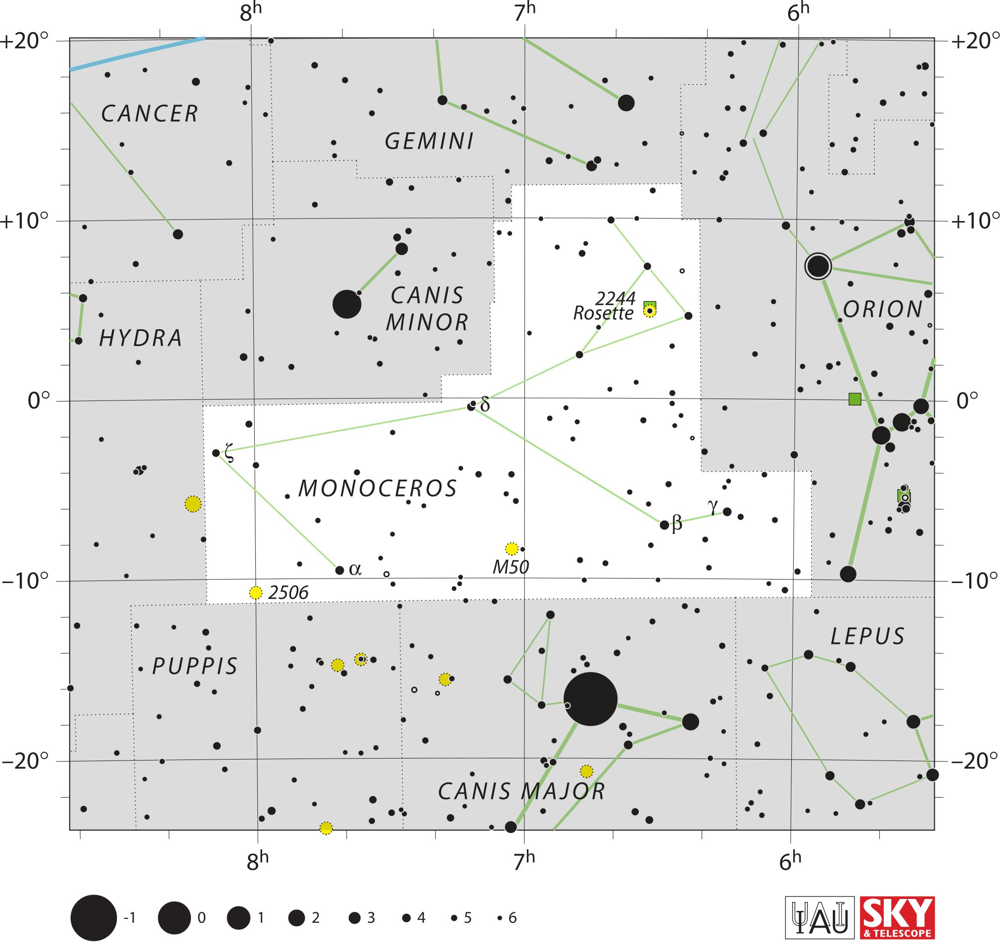

<div data-role="page" id="monoceros" data-theme="a">

	<div data-role="header">
		<a href="#home" data-icon="back" data-rel="back">Back</a>
		<h1>Monoceros</h1>
		<a href="#home" data-icon="home">Home</a>
	</div>

	<div data-role="content">
	
		<div class="cssImageMap">
			 

			<a href="../messier/m50.html" class="messier"
				data-x="980" data-y="1080" data-width="100", data-height="100"></a>


			<a href="cancer.html"  class="constellation" data-side="left" 
				data-x="190" data-y="190" data-width="280" data-height="70"></a>
				
			<a href="gemini.html"  class="constellation" data-side="left" 
				data-x="760" data-y="250" data-width="250" data-height="70"></a>
				
			<a href="hydra.html"  class="constellation" data-side="left" 
				data-x="180" data-y="650" data-width="250" data-height="70"></a>
				
			<a href="canisMinor.html"  class="constellation" data-side="left" 
				data-x="760" data-y="560" data-width="220" data-height="140"></a>
				
			<a href="orion.html"  class="constellation" data-side="right" 
				data-x="1690" data-y="590" data-width="180" data-height="70"></a>
				
			<a href="lepus.html"  class="constellation" data-side="right" 
				data-x="1660" data-y="1250" data-width="200" data-height="70"></a>
				
			<a href="canisMajor.html"  class="constellation" data-side="right" 
				data-x="870" data-y="1560" data-width="400" data-height="70"></a>
				
		</div>

		<div id="here">
			<h2>Monoceros</h2>

			<p>Image Credit: IAU and Sky & Telescope magazine (Roger Sinnott
				& Rick Fienberg)
		</div>
	</div>
</div>
